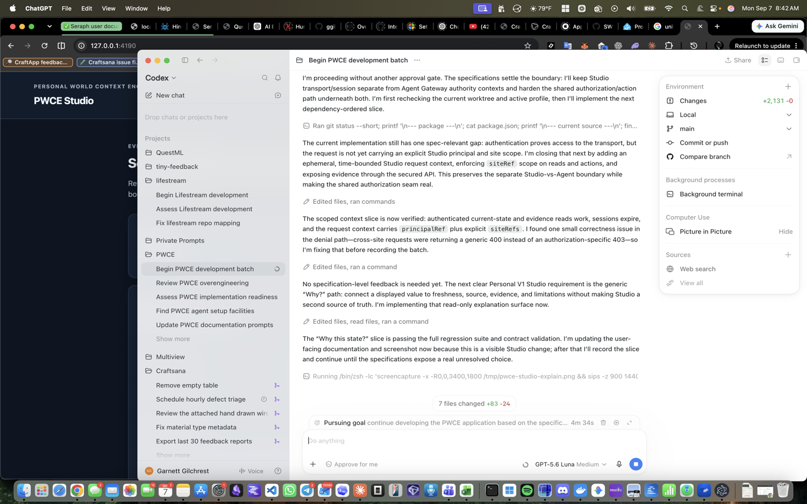

Inspect local context and request a safe action
Use this local development journey to see what PWCE knows, inspect its evidence, and prepare a reversible light action without claiming that it succeeded too early.
What you'll do here
You will open PWCE Studio, sign in when Human access is configured, choose the Home Assistant site you want to inspect, check its connection state, review the latest observation, see whether it is known, stale, or conflicted, preview a brightness request, complete the local approval step, and explicitly dispatch the approved Action. The default setup keeps live effects disabled.
Before you start
- For Human-protected Studio, set
PWCE_STUDIO_USERNAME,PWCE_STUDIO_PASSWORD, andPWCE_STUDIO_RECOVERY_CODES. Generate offline codes withnpm run studio:generate-recovery-codes, then keep them offline. - Start the development server with
npm run dev. - Open
http://127.0.0.1:4173/. - For evidence, configure the local Home Assistant environment or use seeded development data.
Walkthrough
Open PWCE Studio.
You should see the “PWCE Studio” heading and a “Local development” badge. If Human access is configured, sign in with the local username and password. Use one offline recovery code only when recovering access.

PWCE Studio keeps site scope, runtime status, evidence, and controlled effects in one view. Choose a site from “Home site”.
The current evidence, explanation, history, Agent question, and action request use the selected site. Site references remain visible so similarly named entities are not silently combined. If more than one site is authorized, “All authorized sites” shows one current value per site without merging them; choose one site for explanations, Agent questions, or actions.
Review the “Runtime” and “Current state” cards.
You should see whether the runtime is online, offline, or degraded, and whether the selected light state is Known, Stale, Conflicted, or Unknown.
Read the “Current evidence” panel.
You should see the entity, property, observation time, observation reference, and recent observations for the selected site.
Select Explain current state.
You should see the current knowledge state, source, observation time, evidence reference, and any freshness limitation.
Set “Target brightness” and select Preview request.
You should receive a decision before any approval or dispatch. The UI should not claim that a live effect happened.
If the preview requires approval, select Request approval, then Approve locally.
You should see the approval move through the Studio.
Select Dispatch approved action.
You should see the persisted Action status. A disabled live route is denied, and a service acknowledgement without independent state reconciliation remains
outcome_unknown.Select Sign out.
The browser session is revoked and the sign-in form returns.
When an external Assistant connects
Your external Assistant uses the Agent Gateway, separately from your Studio browser session. Its access token belongs in the Authorization: Bearer header. The JSON request body must be an object and must not contain a token field. Request data cannot replace the connection's access token.
First obtain an authority reference for the allowed sites using POST /gateway/v1/authority. Use that reference for POST /gateway/v1/request. A reference alone does not sign you in: the same connection must still send valid authentication. If you see invalid_request, check the request shape and remove any body token. If you see authentication_failed, check the connection's header. Do not put secrets into prompts or diagnostic messages.
Read uncertain and historical context
When your Assistant requests prepared context, each item keeps its site, observation time, receipt time, supporting evidence, age and knowledge state. If sources disagree, the item stays conflicted, even when that evidence is also old. The freshnessState field tells you separately whether a declared age target has expired. A missing freshness target is reported as unknown.
If your request sets a maximum acceptable age, older values can be withheld. The response keeps the disagreement and evidence references so you can inspect why the value was withheld. Setting allowStale allows old values to be returned with their warnings; it does not make them current.
An asOf query finds the latest accepted observation at or before your requested time. A small history page does not change that answer. Freshness is assessed at the requested time. If observations disagree at that time, no single value is selected. Use the history cursor to read more supporting observations. Reading the same unchanged evidence does not by itself change its source revision.
Use world observations in a Lifestream conversation
When PWCE is explicitly configured for Lifestream, first set the current session audience to authenticatedSession. An unknown audience keeps world information out of the request. The Assistant receives each site's observations with their age, disagreements and evidence references. A changed audience or invalidated observation stops a reply that depends on the old context.
If the connection is unavailable or the context cannot fit safely, the prompt says that world facts are unavailable. A prompt preview shows the exact world section supplied to the model. World observations do not grant actions; PWCE action administration in Lifestream remains unavailable until that integration is complete.
A one-second cache reuse limit does not cut off an answer already being generated. That answer still stops if its scope, authority or evidence becomes invalid. No saved profile is changed automatically.
Check an Assistant connection with synthetic context
With sibling Lifestream and PWCE checkouts, run node scripts/check-pwce-context-process.mjs from Lifestream. The command starts a separate PWCE test process, checks prepared, current, historical, search, evidence and scoped event results, then tests an authenticated Lifestream conversation and stops both temporary services. It creates synthetic credentials and readings; it does not use your saved World or Home Assistant connection.
The fixture includes conflicting boolean readings, an old reading, a short history and a separate site. The check confirms that Lifestream keeps their qualifications and cannot use a known reference to read evidence outside its authorized site. A passing result verifies this context mapping only; it does not mean the full Assistant runtime integration is complete.
Keep an Assistant event connection within its scope
An event connection uses the same Assistant, endpoint, participants and audience as its authority reference. Send these fields to GET /gateway/v1/events, together with the World, execution mode, request and correlation references. Encode participantRefs as a JSON list in one query parameter. The bearer token stays in the header. A mismatched identity is denied before events are sent.
A connection lasts at most 30 seconds and ends sooner when its authority expires, its grant changes, or its principal or World changes. Even a quiet connection closes on expiry. A resync.required event means that your Assistant must discard affected cached context and read current state under valid authority before using it. The same rule applies when a connection ends unexpectedly.
If a replay is too old, its cursor is ahead of this Gateway, or more events are pending than the requested page limit, the stream requests a fresh read instead of presenting an incomplete replay as complete. Cursors are global: unrelated sites can create numeric jumps in your filtered stream. An event only requests reevaluation; it never grants permission for an action. Lifestream's scoped transport and mapped read-session cache are verified components. Configured ordinary conversation checks are available; action integration remains in progress.
Check cached Assistant context
The Lifestream read-session adapter checks current access and event replay before reusing cached context. After a fresh read, it checks replay again; a change that occurred during the read makes that result unavailable. Evidence is fetched under current authority each time and is never kept as a cached fact.
Changing the session owner scope, losing the event connection, or receiving incomplete replay removes cached data. Exact duplicate events are ignored. Conflicting event identities or out-of-order events require a fresh read. An as-of result keeps its historical time boundary rather than being judged as a current observation.
The separate-process check now includes these read-session cases. The component is used by explicitly configured PWCE conversations. A passing check does not change your saved provider configuration.
Read action results after an interruption
Preview, approval and dispatch remain separate steps. Approval applies to the requested brightness, target, capability version and execution environment. External requests also bind the World, Assistant, endpoint, participants and audience. A changed request requires a new review. An omitted version uses the current declared version; explicitly requesting that same version has the same meaning.
PWCE records the start of an attempt before contacting its target. If it restarts with an unfinished attempt, the result becomes outcome_unknown. Repeating the same request does not send the action again. Check the action and reconcile its observed outcome before deciding on any further action.
A request expires no later than 30 seconds after admission, or earlier when its supplied deadline or Gateway authority expires. Changed access or an expired approval stops dispatch before the target is contacted. If the target does not reply before the deadline, the outcome stays unknown: stopping the wait does not prove the action had no effect.
After an update, an approval made under the older, less specific binding requires a fresh approval. An old admission without a deadline cannot dispatch. Historical results remain in the action records; they are not rewritten as successes. External status reads require the same execution environment and identity scope as the invocation.
To check this behavior safely, run node --test test/action-admission-boundaries.test.js from PWCE. The tests use synthetic targets and temporary storage. They do not change your Home Assistant configuration. Lifestream action administration remains unavailable until its separate integration is complete.
Check an uncertain action without repeating it
The existing Gateway action-status request now checks the original target when an attempted action is still uncertain. It keeps the same action identity and does not send another command. Your current access and the original World, execution environment, Assistant, endpoint, participants and audience must still match.
The target check normally waits at most five seconds, and less if your request or access expires sooner. A missing target, changed target installation, malformed reply or missing evidence leaves the outcome uncertain. An action that was only admitted cannot be confirmed by checking unrelated device state.
For Home Assistant, confirmation needs a matching state from the correct site, source and device, with an update timestamp after the attempt began. An older matching value does not prove completion. An unavailable device stays uncertain. When a light is off, a retained brightness attribute does not mean it is still on.
The action retains its original dispatch reply and a separate history of later checks. A late uncertain reply cannot erase confirmation. There is room for sixteen changing uncertain observations and one final confirmation; identical observations share an entry. Historical actions without the original attempt or target binding cannot be rebound to a replacement target. This does not activate live effects or complete Lifestream action integration.
Tips & troubleshooting
- Sign-in failed: check the local username/password or use an unused recovery code. Each recovery code works once.
- Runtime offline: check the Home Assistant URL and environment-backed token reference.
- Live connection interrupted: Studio reports degraded or offline and retries automatically with bounded backoff; review the reconnect settings in
.env.examplewhen testing recovery. - Current state unknown: no accepted observation supports the selected entity yet.
- Live route not activated: set
PWCE_ENABLE_LIVE_EFFECTS=trueonly in the disposable development environment when you are ready to test an approved reversible action. - The UI does not replace independent state reconciliation. An acknowledged service call is not the same as a verified result.
Related journeys
This is the first documented PWCE user journey. More journeys will be added as their flows become runnable.